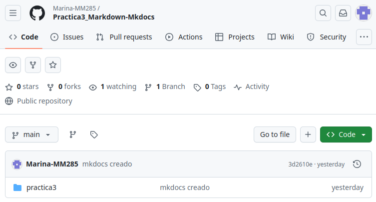
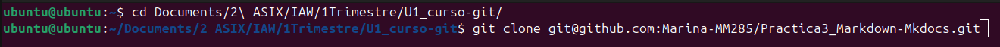
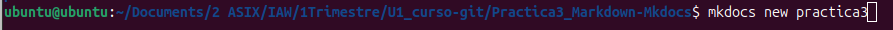
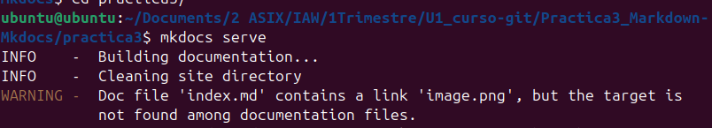
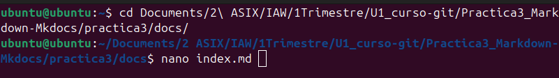
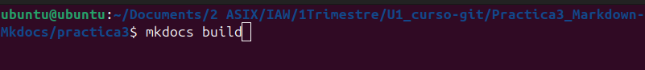
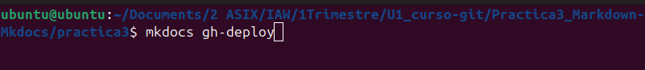

Documentación de proyecto
Practica3
Markdown y Mkdocs
-
Creamos un repositorio nuevo desde Github
- Yo lo he llamado Practica3_Markdown/Mkdocs 
-
Clonamos El repositorio en local para trabajar
- git clone ...
- Donde "..." es la URL SSH del repositorio 
- git clone ...
-
Creamos el mkdocs dentro de nuestro repositorio
- mkdocs new nombre-del-proyecto
- En mi caso será "practica3" 
- mkdocs new nombre-del-proyecto
-
Iniciamos un servidor local, desde dentro de nuestro nuevo proyecto ya creado, para poder ver los cambios que iremos haciendo
- mkdocs serve
- Yo lo haré desde dentro de la carpeta "practica3" 
- mkdocs serve
-
Modificamos el archivo "index.md" para crear nuestra página web
- El archivo "index.md" está dentro de practica3/docs
- cd practica3/docs
- nano index.md
- vim index.md 
- El archivo "index.md" está dentro de practica3/docs
-
Montamos la documentación Mkdocs (este paso se hará dentro de la carpeta donde tenemos nuestro proyecto, en mi caso es "practica3")
- mkdocs build 
-
Subimos el proyecto para crear la URL que hemos entregado (este paso se hará dento de la carpeta donde tenemos nuestro proyecto, en mi caso es "practica3")
- mkdocs gh-deploy 